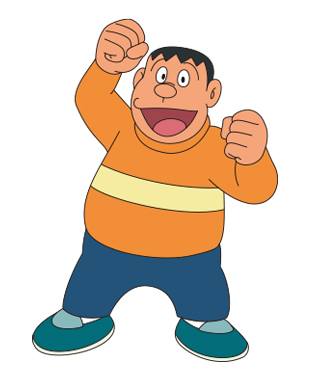
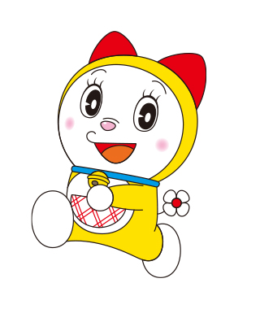
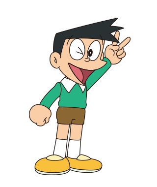

のび太も驚くスケジュール表だよ
長岡まつり大花火大会へ、4人それぞれの出発地から集合して向かうプラン。
タイムテーブル・費用・注意事項をこの一冊にまとめたよ。
20:35
Makoto 千里山発
阪急千里線 → 淡路乗継 → 近鉄日本橋 → 近鉄奈良線 → 近鉄特急ひのとり（大阪上本町→近鉄名古屋）
23:34
Makoto 近鉄名古屋 着
Teppay宅に前泊
前日中
Aki・Nitori 長野入り
前日のうちに長野入り済みの想定。移動手段・宿泊先は未定 要確認

ドラえもんメモ
前日のうちに名古屋・長野へ移動しておくから、当日は朝から本番に集中できるんだ。前泊なしのぶっつけ本番より、体力的にずっと楽だよ。
07:00
Teppay・Makoto 名古屋発
JR特急しなの1号（当駅始発長野行）乗換0回
10:03着 → 10:10頃発
長野駅で4人合流
Aki・Nitoriは長野駅で車で待機してピックアップ。待ち合わせ場所（東口／善光寺口など）は要確認
10:10 〜 11:40頃
長野 → かにや横丁（車）
11:40頃 〜 12:40頃
かにや横丁でランチ〈滞在は最大1時間〉
道の駅マリンドリーム能生の名物、かに料理エリア
〜 14:00頃
かにや横丁 → 長岡花火大会駐車場（車）
14:00頃 到着
長岡到着 〈駐車完了の目標時刻〉
17:30の交通規制開始まで約3時間30分のバッファ
観覧エリア：長岡駅側（右岸・A会場）／有料観覧席
駐車場所：長岡花火大会駐車場（新潟県長岡市渡里町2-24）
14:10頃 〜
駐車場 → 会場（徒歩 or シャトルバス）
駐車場のタイプにより移動手段が異なる。渡里町2-24付近なら徒歩約29分・約2.1km（ほぼ平坦）想定だが、シャトルバス方式の駐車場（例：国営越後丘陵公園なら片道約25分・行き15:00〜18:30運行）の場合はバス発着時刻に合わせて動く必要あり 要確認
夕食は屋台やコンビニでの調達を想定。会場周辺はキャッシュレス決済がほぼ使えないので現金必須（持ち物リスト参照）
15:00頃
有料観覧席 開場
三尺玉イス席（長岡駅側・A会場）。開演（19:20）まで余裕を持って着席しておく
17:30 〜 22:30
交通規制（車両通行止め）
この間は車で一切移動できない。8/2・8/3とも同様の規制
19:20 〜 21:25
花火観覧 🎆
長岡まつり大花火大会 公式サイトで確認済み（両日とも同時間）
21:25以降
会場 → 駐車場（徒歩 or 帰りシャトルバス）
シャトルバス方式の駐車場の場合、帰りの運行は20:30〜22:30。焦らず、しかし早めの便を目指す（遅い便ほど混雑）要確認
22:30 以降
長岡 → 東京（車・出発可能時刻）
Aki運転・約3.5〜3.8時間。長岡IC／長岡南越路スマートICは大渋滞のため厳禁。越後川口IC・小千谷IC経由を推奨

ジャイアンからの注意
花火が終わっても22:30まで車は1ミリも動かせないぞ！長岡IC方面は最大3時間以上の大渋滞、国道8号はわずか4.4kmに3時間かかった記録もある。俺様が許すルートは越後川口IC・小千谷ICだけだ、覚えとけ。
案 / PROPOSAL
🛁復路のお風呂
花火終了後（21:25〜）、長岡市内・周辺SA/PAでの入浴は渋滞と営業時間（22〜24時閉店）の壁でほぼ不可能。東京方面へ南下しながら越後湯沢に立ち寄るのが現実的なルート案だよ。
目的地案：「ゆざわ健康ランド」
越後湯沢ICから車で約7分（国道17号沿い）。24時間営業のため、渋滞で到着が深夜になっても確実に入浴可能（※深夜料金加算あり）。
回避ルート案
- 激混みの「長岡IC」は完全に無視する
- 会場脱出後、国道17号を小千谷・魚沼方面へひたすら南下
- 下道の混雑が抜けた「小千谷IC」「越後川口IC」「堀之内IC」等のいずれかから関越道（上り・東京方面）に乗る
- 「湯沢IC」で降りて目的地へ
もし温泉が面倒になった場合は、関越道「寄居PA（上り）」に24時間営業のコインシャワーがあるため、そこを最終バックアップとする。
DAY2
帰路 · それぞれ帰宅
8/3 (Mon)
深夜（時刻未定）
東京 着
22:30発からの所要時間はあくまで目安で、当日の渋滞状況次第で大きく変動するため到着時刻はあえて明記しない。着いたらAkiの家で始発まで仮眠。
復路のお風呂案を使う場合はさらに越後湯沢での立ち寄り分（約1〜1.5時間）が上乗せされる
6:00頃
始発でそれぞれ帰宅
Teppayは名古屋へ、Makotoは大阪（千里山）へ。東京発の新幹線始発は例年6:00頃だが、正確な号数・時刻は近くなったら要確認。
前日の花火帰りは新幹線が混雑しやすいので早めの指定席予約推奨🔗 予約サイト（スマートEX・東海道新幹線）

ドラミちゃんより
3日間おつかれさま！東京に着いたらすぐ仮眠して、始発でそれぞれのおうちへ帰ろうね。指定席は早めに取っておくと安心だよ。
🔔費用目安
| 区間 | 手段 | 費用 |
|---|
千里山→名古屋
（Makoto） | 阪急+近鉄特急ひのとり | 5,430円 |
名古屋→長野
（Teppay・Makoto） | JR特急しなの1号 | 7,730円 |
長野→長岡
（車・能生経由） | 高速代／ガソリン代 | 高速代：4,020〜5,740円
ガソリン代：約3,340円 |
長岡→東京
（車・湯沢お風呂立寄り） | 高速代／ガソリン代 | 高速代：4,200〜6,000円
ガソリン代：約4,230円 |
三尺玉イス席チケット
（1人あたり） | 長岡花火チケットセンター | 5,000円 |
駐車場代
（1台あたり） | 公式抽選制駐車場 | 1,000〜6,000円
要確認（駐車場により異なる） |
| 東京→名古屋/大阪 | 新幹線始発 | 未確定（予約時に確定） |
※ 確定しているのはMakotoの2区間の運賃（IC優先）と三尺玉イス席チケット代（一般販売価格）。車の高速代・ガソリン代は下記の詳細試算を参照。駐車場代は公式リストの料金レンジで暫定表示、実際に予約した駐車場が判明次第確定させること。Aki/Nitoriの前日移動費、翌朝の新幹線代はまだ概算段階。
高速代・ガソリン代の詳細試算（燃費10km/L・175円/L換算）
【往路】長野 → かにや横丁（能生）→ 長岡花火大会駐車場（約190.8km）
高速料金（長野IC→能生IC）：通常2,970円／深夜・休日割引2,080円
高速料金（能生IC→長岡IC）：通常2,770円／深夜・休日割引1,940円
ガソリン：約19.1L・約3,340円
合計：高速代 通常5,740円／深夜・休日割引4,020円、ガソリン代 約3,340円
🔗 長野IC→能生IC（NAVITIME）
🔗 長岡IC→能生IC（NAVITIME）
【復路】長岡会場 → 湯沢IC（お風呂）→ 東京・練馬IC
① 会場→小千谷IC（下道・渋滞考慮）→湯沢IC：高速1,190円／ETC深夜830円、ガソリン約7.5L・約1,310円
② 湯沢IC→練馬IC：高速4,810円／ETC深夜3,370円、ガソリン約16.7L・約2,920円
合計：高速代 通常6,000円／ETC深夜4,200円、ガソリン代 約4,230円（最低見積り）
注意 長岡〜小千谷間は下道の激しいストップ＆ゴーが想定され、実際の燃費は10km/Lを大幅に下回る可能性が高い。復路だけでガソリン代5,000円程度、往復＋現地移動込みで総額9,000〜10,000円程度を見込んでおくこと

スネ夫のひとこと
長野→長岡の高速代・ガソリン代、ルート確定で数字もきれいになったね。でも復路の渋滞燃費悪化分は最低見積もりのままだし、東京からの新幹線代もまだ未定。ぼくなら出発前に全部きっちり確定させておくけどね。
⚠️会場周辺の交通規制・駐車場
- 交通規制：8/2(日)・8/3(月)とも 17:30〜22:30頃 車両通行止め（当日の状況により早まる場合あり）
- 観覧席開場：有料席 15:00頃（一部16:00）／無料席 17:00頃
- 公式駐車場：有料観覧席チケット保有者のみ抽選制（2026年の抽選受付は6/19〜6/24で終了済み）。当グループは駐車場を予約済みだが、公式リストのどの駐車場か（渡里町2-24含む）は要確認 要確認。料金は駐車場ごとに1,000〜6,000円と幅があり、駐車場によって「徒歩◯分」タイプと「シャトルバス」タイプが混在する。予約確認メール・駐車券で番号と名称を確認し、このページを更新すること
- シャトルバス方式の駐車場の場合：例）国営越後丘陵公園（丘陵公園⇔会場、片道約25分）は料金5,000円にシャトルバス往復代込み。行き15:00〜18:30・帰り20:30〜22:30。帰りのシャトルバスが到着し退園確認できるまで閉門せず、車の翌日留め置きは不可。徒歩距離の駐車場とはタイムスケジュールが変わるため要確認
- 抽選に外れた場合の代替：「軒先パーキング」（新潟パーキング会・個人宅の駐車スペース事前予約）も参考情報として残しておく
- 実データ：長岡IC周辺の国道8号は、通常7分の4.4km区間が最大3時間以上かかった記録あり。花火終了後は「車が全く動かない」レベルの大渋滞になる
✕ 大渋滞（避ける）
長岡I.C.
長岡南越路スマートI.C.
行きの経路（長野→能生→長岡）も長岡IC・長岡北スマートIC・中之島見附IC・長岡南越路スマートICを避けた方が早く着けるとの案内あり。Akiのカーナビには必ず回避ルートを設定すること。
🤝約束事
- 集合場所：花火大会終了後、会場周辺は電波がほぼ入らなくなる。はぐれても連絡が取れない前提で、車（Akiの車）の集合場所を事前に決めておくこと 要決定
- 観覧中にはぐれたら：三尺玉イス席は座席番号が決まっているので、はぐれたら合流を焦らず自分の座席に戻ること。電波が無いので探し回らない
- 連絡先はアナログで持つ：スマホの電波が無い・電池切れの前提で、4人全員のお互いの電話番号・車の集合場所・駐車場住所（新潟県長岡市渡里町2-24）を紙に書くかスクリーンショットで保存しておくこと
- 車に戻る門限：規制解除（22:30）後、車の集合場所に23:00までに戻らなければ〈対応要検討〉 要決定
- 荒天時の順延・中止：小雨決行。荒天の場合は中断・中止の可能性があり、当日朝7時頃に決定される。順延の場合、8/2は8/16に、8/3は8/17に振替。チケットはそのまま有効（自己都合の返金は不可）
🎒必須持ち物リスト
「三尺玉イス席」の観覧条件に合わせた必須持ち物リスト。クッションは任意、無駄なものは省いて、これだけは絶対に忘れちゃいけないものだけをまとめてあるよ。チェックリストとして使ってね。
【最重要】忘れたら会場に入れない・詰むもの
「三尺玉イス席」の観覧チケット4人それぞれが自分の分を持つ。スマートフォンの画面表示タイプなら、電波障害に備えて事前にスクリーンショットを必ず保存しておくこと。
現金（1万円〜程度、千円札と小銭多め）会場周辺は電波が不通になりやすく、キャッシュレス決済がほぼ使えなくなるから要注意だよ。
モバイルバッテリー電波を探すスマホはバッテリー消費が異常に早い。大容量のものを持っていこう。
歩き慣れたスニーカー駅から席まで、帰りの大混雑でも1時間以上歩くことになる。サンダルや下駄は怪我のもとだよ。
大きめのゴミ袋（2〜3枚）自分のゴミを入れるほか、パイプ椅子の下に荷物を置くときの「敷物」や「泥よけ」としても必要だよ。
【環境・衛生】過酷な河川敷を生き抜くためのもの
ウエットティッシュ ＆ 水に流せるポケットティッシュ仮設トイレのトイレットペーパーは高確率で切れてる。手の汚れを拭くためにも多めに持っておこう。
レインコート（カッパ）会場内は傘・日傘の使用が禁止されてるから、雨が降ったらこれしかない。
冷凍したペットボトル飲料（スポーツドリンク等） ＆ 塩分タブレット夕方でも熱中症のリスクは高いし、周辺の自販機はすぐ売り切れる。事前に凍らせたものを持っていこう。
タオル（バスタオル推奨）帰りに立ち寄り入浴（復路のお風呂案）を使うなら必須。荷物に入れておくと安心だよ。
荷物はこれらすべてをリュックサックなど「両手が完全に自由になるカバン」にまとめよう。帰りの大混雑で手荷物を持っていると、押し合いになったときに危険だよ。しっかり準備して臨もう。